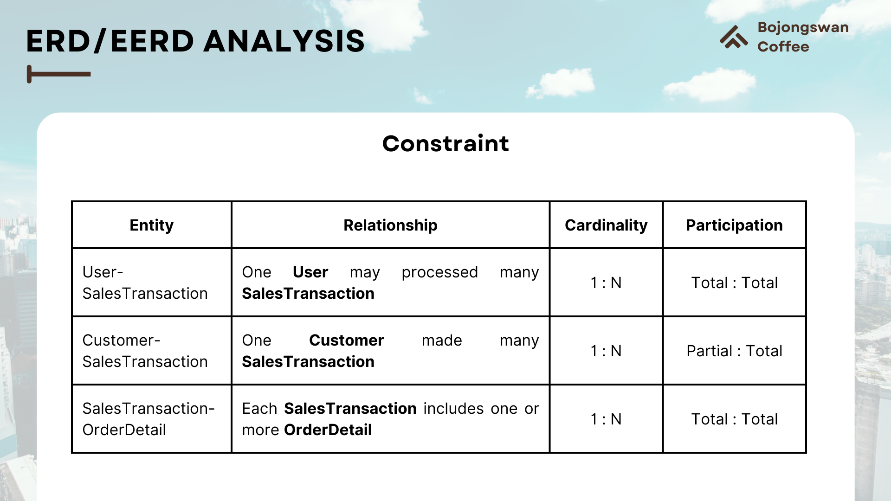

Inventory & Finance System for Bojongswan Coffee
Bojongswan Coffeeshop IllustrationProject Overview
Bojongswan Coffee is a small but rapidly growing business that faces several challenges in managing its inventory and finances effectively. These challenges include difficulties in tracking stock, recording sales transactions, and generating accurate financial reports. The objective of this project is to design and develop a database application tailored for inventory and financial management at Bojongswan Coffee. This application aims to empower the business owner by providing tools to efficiently manage stock, streamline sales recording, and produce accurate financial reports.
Key Points of the Project Overview:
-
App Idea
This application will serve as an all-in-one solution for inventory and financial management, enabling Bojongswan Coffee to track stock, record sales transactions, manage customer and supplier data, and generate financial reports.
-
Target User
Owners and Managers of Bojongswan Coffee, as well as employees responsible for stock and sales management.
-
Key Features
- Inventory Management: Track stock levels, manage reorder points, and receive notifications when stock is low.
- Sales Tracking: Record sales transactions, generate invoices, and track customer purchases.
- Financial Reporting: Generate financial reports, sales reports, and inventory reports.
ERD/EERD Analysis
-
Problem Domain
- Each User has UserID, Name, Email. A SalesTransaction is created by a User (e.g., a cashier or manager).
- Each SalesTransaction has TransactionID, Date, TotalAmount.
- Each SalesTransaction may involve a Customer.
- Each Customer has CustomerID, Name, ContactInfo.
- Each SalesTransaction must include one or more OrderDetail.
- Each OrderDetail has OrderID, ProductID, Quantity, Price.
-
Business Rules
- A SalesTransaction must be recorded by a User (e.g., a cashier or manager). The ‘UserID’ in the SalesTransaction table is a foreign key that references the ‘User’ table, indicating which user processed the transaction
- A SalesTransaction may involve a Customer. The ‘CustomerID’ in the SalesTransaction table is a foreign key that references the Customer table, indicating the customer who made the purchase
- Each SalesTransaction can have many OrderDetails. The ‘TransactionID’ in the OrderDetail table is a foreign key that references the SalesTransaction table, indicating the details of each product sold in the transaction.
-
Entity and Attributes
To effectively manage inventory and finances, it is crucial to define the key entities and their attributes within the system. Each entity represents a fundamental component of the business process, while its attributes capture specific details necessary for accurate tracking and reporting. Below is an overview of the entities and attributes designed for the Inventory and Finance System for Bojongswan Coffee.
-
User: Represents individuals (e.g., cashiers, managers) interacting with the system. Each user is uniquely identified by
UserIDand associated with attributes such asNameandEmail. -
Customer: Represents the customers of Bojongswan Coffee. Each customer is identified by a unique
CustomerIDand includes attributes likeNameandContactInfo, which facilitate better customer tracking. -
SalesTransaction: This entity captures every sale made at the store. It is uniquely identified by
TransactionIDand contains attributes such asDateandTotalAmountto ensure accurate financial records. -
OrderDetail: Represents the details of products sold in each transaction. Each
OrderDetailincludesOrderID,ProductID,Quantity, andPriceto ensure complete documentation of individual orders.
-
User: Represents individuals (e.g., cashiers, managers) interacting with the system. Each user is uniquely identified by
-
Constraints

Constraints help define the rules governing relationships between entities in a database. For example, in the relationship between the User and SalesTransaction entities, one User may process many SalesTransaction records. This relationship has a cardinality of 1:N, meaning "one-to-many," and a participation of Total:Total, indicating that every User must participate in at least one SalesTransaction and vice versa.
Cardinality defines the number of instances of one entity that can or must be associated with instances of another entity. For instance, the 1:N cardinality in the User-SalesTransaction relationship shows that a single User can process multiple SalesTransactions.
Participation defines the extent to which an entity must be involved in a relationship. Total participation in the User-SalesTransaction relationship (Total:Total) means that every User must process at least one SalesTransaction, and every SalesTransaction must be linked to a User.
-
ERD Bojongswan Coffee App
The Entity-Relationship Diagram (ERD) for the Bojongswan Coffee App illustrates the relationships between key entities in the inventory and financial management system. It highlights how data is structured, interconnected, and supports seamless operations. Here we define the entities within our ERD design
- User: Staff managing the system, uniquely identified by
UserID, with attributesNameandEmail. - Customer: Tracks customer details such as
CustomerID,Name, andContactInfo. - SalesTransaction: Represents individual sales, uniquely identified by
TransactionID, with attributesDateandTotalAmount. - OrderDetail: Contains details of items in a transaction, including
OrderID,ProductID,Quantity, andPrice.
By designing this ERD, the Bojongswan Coffee App ensures that all critical data relationships are effectively captured. This design simplifies database maintenance, improves data accuracy, and ensures that each entity interacts seamlessly with others in the system. The ERD also supports the implementation of key business processes such as inventory tracking, sales monitoring, and customer relationship management. It enables real-time updates across the system, ensuring that sales and stock levels are synchronized. With a robust ERD design, the Bojongswan Coffee App achieves several business benefits:
- Streamlined Operations: Ensures real-time updates between sales and inventory.
- Enhanced Traceability: Links every transaction to a staff member for accountability.
- Data Accuracy: Prevents duplication and inconsistencies through well-defined relationships.
- User: Staff managing the system, uniquely identified by
RDBMS Design
The Relational Database Management System (RDBMS) design for the Bojongswan Coffee App establishes a structured framework for organizing and managing data efficiently. it is essential to define Primary Keys (PK) and Foreign Keys (FK), which are the building blocks of relational data models.
-
Primary Key:
A Primary Key is a unique identifier for a record within a table. It ensures that every row in a table can be uniquely identified and prevents duplicate data. For example:
In the User table, the
UserIDserves as the primary key. In the Customer table, theCustomerIDis the unique identifier. Other tables like SalesTransaction and OrderDetail useTransactionIDandOrderIDas primary keys, respectively. -
Foreign Key:
A Foreign Key is an attribute in one table that establishes a link to the Primary Key in another table. It enforces relationships between entities and maintains referential integrity.
For example:
The
UserIDin the SalesTransaction table references theUserIDin the User table. TheCustomerIDin the SalesTransaction table links to the Customer table. TheTransactionIDin the OrderDetail table connects to the SalesTransaction table.
Database DDL
In this section, we define the Entities' Table, specifying its columns, data types, and constraints. The table includes the following attributes:
- User: Staff managing the system, uniquely identified by
UserID, with attributesNameandEmail. - Customer: Tracks customer details such as
CustomerID,Name, andContactInfo. - SalesTransaction: Represents individual sales, uniquely identified by
TransactionID, with attributesDateandTotalAmount. - OrderDetail: Contains details of items in a transaction, including
OrderID,ProductID,Quantity, andPrice.
-
User Table
In the Bojongswan Coffee App, the User table is defined using the
CREATE TABLEcommand in SQL. The table is designed to store essential user information such as UserID, Name, and Email while ensuring data integrity through the use of constraints like the Primary Key.The design process begins with defining each column's data type and constraints. The
UserIDattribute is a VARCHAR(20) field, meaning it can hold up to 20 characters. It is further constrained as a Primary Key to enforce uniqueness. Similarly, theNameandEmailattributes also use the VARCHAR(20) data type, allowing storage of textual data with a maximum length of 20 characters. Both columns are nullable, making them optional entries in the table -
Customer Table
The Customer table is defined using the
CREATE TABLEcommand in SQL. This table is designed to capture essential customer information, including CustomerID, Name, and ContactInfo, while ensuring data consistency through the application of constraints like the Primary Key.The design process starts by defining the data type and constraints for each column. The
CustomerIDcolumn is defined as anINTdata type, which stores numeric values and serves as the Primary Key. This constraint enforces uniqueness, ensuring that each customer record is distinct. Additionally, theNameandContactInfocolumns use theVARCHARdata type, allowing storage of textual data. TheNamefield can hold up to 20 characters, whereas theContactInfofield is limited to 15 characters. Both columns are nullable, which means they can be left empty if needed. -
Order Detail Table
The
OrderDetailtable in the Bojongswan Coffee App is designed to store details about items in individual sales transactions. This table captures critical information such as product details, quantity, and price, ensuring accurate and structured data management.Here are the attributes of the OrderDetail Table.
OrderIDDefined as an INT data type and serves as the Primary Key, ensuring that each record in the OrderDetail table is uniquely identifiable and prevents duplication.ProductNameDefined as a VARCHAR(100) data type, allowing up to 100 characters to store the product name involved in the order. This field is nullable, meaning it is optional.QuantityDefined as an INT data type, capturing the quantity of the product ordered. It enables inventory tracking and ensures that order details reflect accurate amounts.PriceDefined as a DECIMAL(10,2) data type, allowing precise values with two decimal places to record the price of the product.the
ALTER TABLESQL command was used to add the TransactionID column to the OrderDetail table. This column establishes a relationship between the OrderDetail table and the SalesTransaction table, ensuring that each order detail is linked to a valid transaction.We first added the
TransactionIDcolumn with the INT data type. Then, we defined a Foreign Key constraint to link OrderDetail column with theTransactionIDin the SalesTransaction table. -
Sales Transaction Table
The SalesTransaction Table is created using the
CREATE TABLESQL command to manage transaction records effectively. This table includes attributes such as TransactionID, Date, and TotalAmount, ensuring seamless tracking and organization of all sales-related data.The
TransactionIDcolumn is defined with theINTdata type and serves as the Primary Key, guaranteeing the uniqueness of each transaction. TheDatecolumn utilizes the DATE data type, allowing the system to store the specific date of each transaction. Finally,TotalAmountis assigned the DECIMAL(10,2) data type to handle precise monetary values, ensuring accurate financial records.In addition to these attributes, the table establishes relationships with other entities in the database. Using the
ALTER TABLEcommand, Foreign Key constraints are added to the UserID and CustomerID columns, linking the SalesTransaction Table with the User Table and the Customer Table. This ensures that every transaction is associated with a valid user and customer, maintaining data integrity across the system.
Database DML
In the Database DML (Data Manipulation Language) section, we focus on the practical implementation of our database by inserting meaningful data into the predefined tables. This is primarily achieved using the INSERT INTO query alongside the VALUES clause.
These queries play a critical role in populating our database with the necessary records, ensuring the system is equipped to support real-world operations seamlessly.
-
User Database
The User Database serves as the foundation for managing data related to stakeholders in the Bojongswan Coffee App, such as staff members. By utilizing the
INSERT INTOquery, user records are added with attributes like UserID, Name, and Email. This ensures efficient data management for operations such as maintaining stakeholder records, tracking sales transactions, and enabling role-based system access. TheVALUESquery allows us to add new users to the system while adhering to specific requirements defined by attributes like UserID, Name, and Email. This ensures that all data entries align with the database structure, promoting consistency and accuracy across the system -
Customer Database
The Customer table in the database is populated using the
INSERT INTOcommand alongside theVALUESclause to record key customer information, such as CustomerID, Name, and ContactInfo. This functionality ensures that every customer visiting the coffee shop is logged into the system, enabling a comprehensive and structured database of customer records. Recording customer data offers significant benefits, such as improving personalized services, tracking customer visits and purchases, and supporting targeted marketing strategies. Additionally, it helps the coffee shop maintain a robust customer relationship management system, fostering loyalty and ensuring operational efficiency in catering to customer needs. -
Order Detail Database

The OrderDetail table is populated using the
INSERT INTOstatement combined with theVALUESclause, allowing the addition of detailed information for each order, such as OrderID, ProductName, Quantity, Price, and the corresponding TransactionID. This enables the system to record every item included in a customer's order and associate it with a specific transaction. The implications of this process are significant for managing inventory, calculating revenue, and tracking sales performance. Furthermore, this data provides the foundation for analyzing customer preferences, such as identifying the most popular menu items based on order frequency. This insight can guide decisions for inventory stocking, promotional activities, and menu adjustments to align with customer demand. -
Sales Transaction Database
The SalesTransaction table is a vital component of the database that records detailed information about each transaction. Using the
INSERT INTOstatement along with theVALUESclause, capturing attributes such as TransactionID, Date, TotalAmount, UserID, and CustomerID. This structure ensures that every transaction is uniquely identified and provides a comprehensive record of sales activities. The inclusion of UserID links each transaction to the staff member responsible for recording it, while CustomerID associates the transaction with the corresponding customer. This setup facilitates accountability and enables a clear audit trail for every sale. Additionally, analyzing the SalesTransaction data allows for insights into sales trends, peak business period, and customer purchasing behavior, which can inform strategic decisions for operational efficiency and marketing efforts.
Database DML
In the Database DML (Data Manipulation Language) section, we focus on the practical implementation of our database by inserting meaningful data into the predefined tables. This is primarily achieved using the INSERT INTO query alongside the VALUES clause.
These queries play a critical role in populating our database with the necessary records, ensuring the system is equipped to support real-world operations seamlessly.
-
SELECT function for specific purpose #1
Question:What are the name and email address of the user with ID 150111?
Answer:
SELECTName, EmailFROMUserWHEREUserID = 150111; -
SELECT function for specific purpose #2

Question:What products and how many of each were ordered in transaction number 1?
Answer:
SELECTProductName, QuantityFROMorderdetailWHERETransactionID = 1; -
UPDATE Function #1
Question:Update the email address for a user with ID 150111 in a database to klopp@yahoo.com
Answer:
UPDATEUserSETEmail = 'klopp@yahoo.com'WHEREUserID = 150111; -
UPDATE Function #2
Question:Write an SQL statement to update the ContactInfo for the customer with CustomerID 2 to '555000'
Answer:
UPDATECustomerSETContactInfo = '555000'WHERECustomerID = 2;
Conclusion
The Bojongswan Coffee App is a tailored SQL-driven solution addressing key operational challenges in inventory and financial management for small businesses. By leveraging robust relational database design, the app provides a foundation for scalable, efficient, and data-driven operations. This project highlights my expertise in designing and implementing practical database systems, demonstrating my ability to bridge technical skills and business needs. It's a stepping stone toward empowering businesses to make informed, data-backed decisions while optimizing day-to-day processes